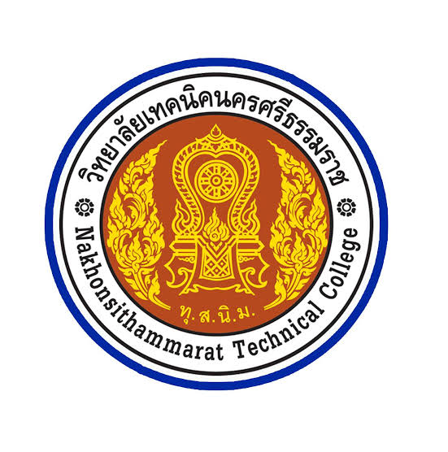

ABOUT ME
ข้อมูลเบื้องต้นเกี่ยวกับตัวผม
ชื่อเล่น: ซัน
ระดับมัธยมต้นโรงเรียนวิชิตสงคราม

ระดับประกาศนียบัตรวิชาชีพวิทยาลัยเทคนิคนครศรีธรรมราช
ระดับประกาศนียบัตรวิชาชีพชั้นสูงวิทยาลัยเทคนิคนครศรีธรรมราช